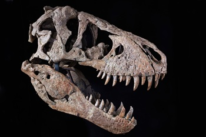

Fun Facts About T. rex
- T. rex had banana-shaped teeth up to 30 cm long.
- It had one of the most powerful bite forces ever recorded.
- Its sense of smell was better than most modern animals.

Lived in Asia during the late Cretaceous.
Closely related to T. rex.
Read more about TarbosaurusDaspletosaurus means "frightful lizard."
Lived in North America about 76 million years ago.
Read more about DaspletosaurusAlbertosaurus was smaller and faster than T. rex.
Albertosaurus lived in what is now Canada during the Late Cretaceous.
Read more about AlbertosaurusGorgosaurus is believed to have hunted in packs.
Gorgosaurus lived in lush floodplain envrionments.
Read more about GorgosaurusDryptosaurus is one of the oldest theropods in the Cretaceous.
Dryptosaurus means "tearing lizard".
Read more about DryptosaurusGuanlong was an ancestor to T-Rex, preceding its appearance by 90 million years.
One of the smallest Tyrannosaurids at 3 meters long.
Read more about GuanlongThe most complete T-Rex fossil ever found (90% complete).
Discovered in 1990 in South Dakota.
Learn More About Sue